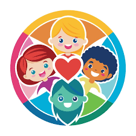
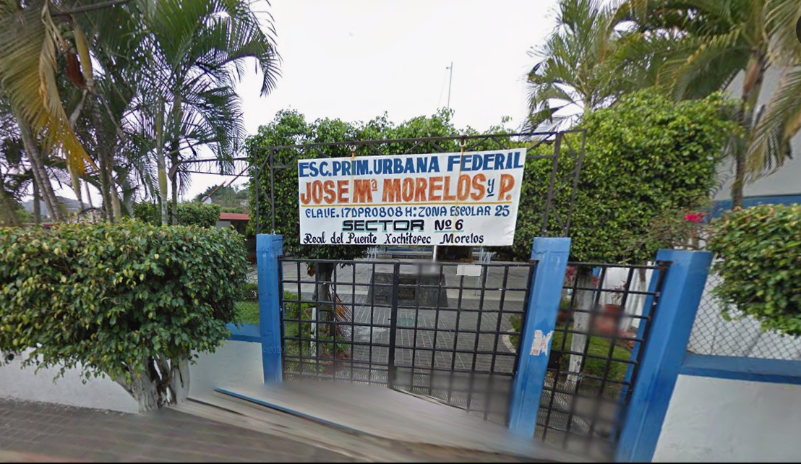

Ser una escuela de calidad que promueva una educación inclusiva y humanista, con docentes comprometidos en el desarrollo de competencias, a fin de formar seres humanos integrales, capaces de aprender a aprender, aprender a hacer, aprender a ser y aprender a convivir en democracia, a través de una comunidad escolar participativa.
Somos una institución colegiada, respetuosa y comprometida, que asume con profesionalismo la educación integral e inclusiva de alumnas y alumnos, garantizando que se desarrollen competencias y valores para alcanzar el perfil de egreso de la educación básica y continuar aprendiendo a lo largo de su vida.

En nuestra escuela fomentamos valores como el respeto, la responsabilidad, la honestidad y la solidaridad. Buscamos que los alumnos convivan en un ambiente de armonía, aprendiendo a trabajar en equipo y a ser mejores personas. Además, promovemos el compañerismo y la empatía, para que todos se sientan incluidos y apoyados.
También enseñamos la importancia de respetar las reglas, cuidar el entorno y ayudar a los demás, formando estudiantes responsables tanto en la escuela como en su vida diaria.

La Escuela Primaria “José María Morelos y Pavón” fue fundada con el objetivo de brindar educación a los niños de la comunidad. Con el paso del tiempo, ha crecido formando generaciones de estudiantes comprometidos con su aprendizaje y su desarrollo personal.
Gracias al esfuerzo de docentes, alumnos y padres de familia, la institución ha logrado mejorar sus espacios y fortalecer sus actividades educativas, promoviendo siempre un ambiente de respeto, responsabilidad y convivencia.
Hoy en día, es reconocida como un espacio donde se impulso el conocimiento, los valores y el desarrollo integral de los estudiantes, preparándolos para continuar su formación y enfrentar nuevos retos en su vida diaria.